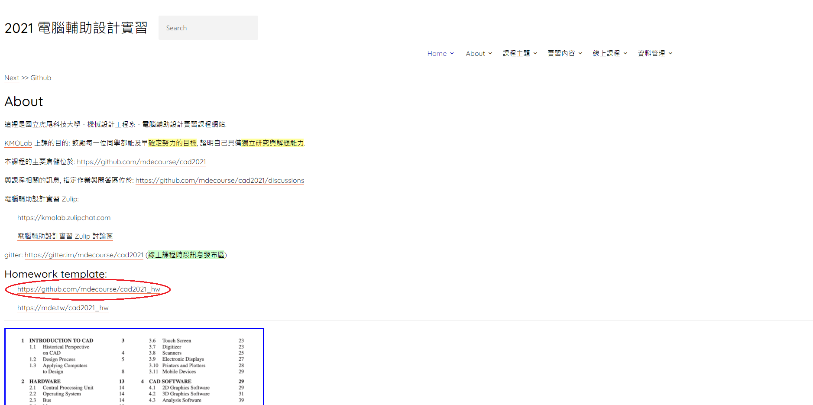

上傳進度 <<
Previous Next >> w4 wink建立
w1 建立倉儲
建一個 "cad2021_hw" 的倉儲
先下載三樣東西 portablekmol_base.7z
Python395.7z
portablegit_2.31.1.7z
安裝倉儲子模組:
進入 https://github.com/mdecourse/cad2021_hw
點選 "Use this template" (綠色的)
選擇"自己"的github帳號並幫倉儲取名

點選上方列表 "Settings" 再點選左列的 "Pages"
更改 Branch : 選 "main" 最後記得要 Save
把先前下載的三樣東西 解壓縮
Python395 和 portablegit_2.31.1.7z 放進 "data" 裡面
打開 "start_ipv6"
打開跳出來的記事本視窗，然後左鍵按住把 "start_ipv4" 拉進去
圈起來的地方要改(改成跟照片這樣)
接著開啟ipv4 複製倉儲到自己的隨身碟
(scrum-1 要換成自己的學號)
接下來先 "stop" 在打開 "start_ipv4"
輸入 "pip install pyopenssl" 安裝 pyopenssl 模組
再來就可以試試看 "cms"
有跑出網址就代表安裝成功
(然後要告訴系統 user.name 和 user.email)
git config --global user.name 你的名字 (ex:40923116)
git config --global user.email 你的學校gm帳號 (ex:40923116@gm.nfu.edu.tw)
--
建立 token
點選右列帳號下的 "Settings"
點選左列的 "Developer settings"
點選 "Personal access tokens"
點選 "Generate new token"
輸入自己的密碼
Note 是倉儲名字
public_repo 是允許 push 的權限
上傳進度 <<
Previous Next >> w4 wink建立